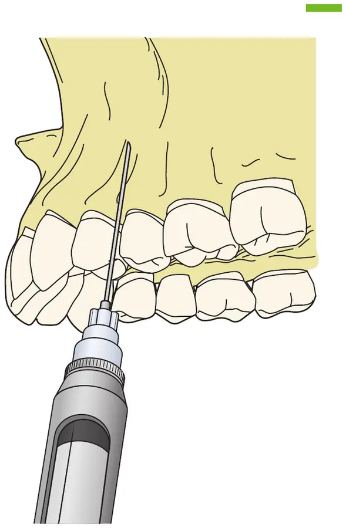

نسخه استخراجشده؛ ترجمه یا تأیید علمی انجام نشده است. وضعیت: captured
بیشتر دردی که بیمار از «آمپول دندانپزشکی» به یاد دارد، از خودِ سوزن نمیآید — از سه چیز میآید: بافت خشک و شل، تزریق سریع، و محلول سرد.

آمادهسازی بافت سه گام دارد: خشک کردن با گاز استریل، آنتیسپتیک موضعی (اختیاری)، و بیحسی موضعی سطحی برای یک تا دو دقیقه.
و یک نکته که همه از آن رد میشوند: بیحسی سطحی باید واقعاً یک تا دو دقیقه بماند. گذاشتن و بلافاصله برداشتنش، فقط مزهی تلخ به بیمار میدهد و هیچ اثری ندارد.
کشیدن بافت پیش از ورود سوزن، از سادهترین راههای کم کردن درد ورود سوزن است. در بلاک آلوئولار تحتانی، انگشتی که روی شیار کورونوئید است، بافت را به سمت خارج میکشد و سفت میکند — و همین ورود سوزن را کمآسیبتر میکند و دید بهتری میدهد.
سرعت تزریق از مهمترین عوامل درد حین تزریق و پس از آن است. محلولی که با فشار و سرعت وارد بافت شود، بافت را پاره میکند و درد و تورم پس از عمل میسازد.
اعداد کاربردی: بلاک نازوپالاتین حداقل ۱۵ تا ۳۰ ثانیه برای حداکثر یکچهارم کارتریج، بلاک پالاتین بزرگ حداقل ۳۰ ثانیه. یعنی تزریق پالاتال نباید در چند ثانیه تمام شود.
آسپیراسیون: پیش از تزریق حتماً آسپیره کن — و در تزریقهای پرخطر، در دو صفحه. نرخ آسپیراسیون مثبت برای بلاک آلوئولار تحتانی از همه بالاتر است (۱۰ تا ۱۵ درصد)؛ گاو-گیتس حدود ۲٪ و ویزیرانی-آکینوزی کمتر از ۱۰٪.
و ایمنی خودت: هرجا ممکن است، از آینهی دهانی برای رترکشن استفاده کن تا خطر فرورفتن سوزن در دست خودت کم شود. و پس از تزریق، بیدرنگ سوزن را ایمن کن.
یک نکتهی بالینی که سرعت را به عمق گره میزند: در بلاک آلوئولار تحتانی، در بیشتر بیماران لازم نیست حین عبور سوزن از بافت نرم محلولی تزریق شود؛ ولی در بیمار مضطرب یا حساس، تزریق حجمهای کوچک حین پیشروی سوزن توصیه میشود.